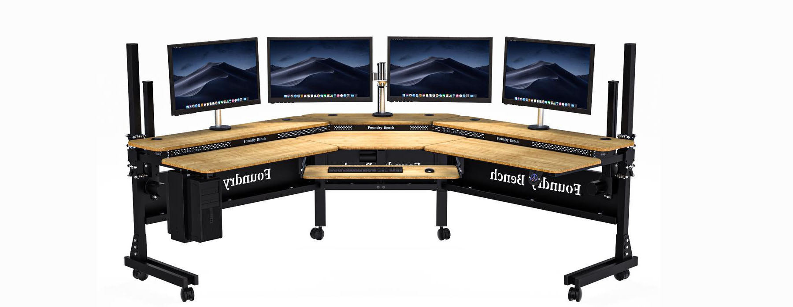

Health Benefits of Standing Desks: Enhancing Well-Being and Productivity
Standing desks are revolutionizing the modern workspace by offering significant health benefits that can transform your workday. By integrating a standing desk into your workspace, you can experience health benefits and create a more balanced, productive, and enjoyable work environment. Stand up for your health and well-being with a standing desk today!
Why Choose Standing Desks?
Reduced Risk of Chronic Diseases: Standing desks promote movement, which helps lower the risk of chronic conditions like heart disease, diabetes, and certain cancers by improving cardiovascular health.
Improved Posture and Reduced Back Pain: Standing desks encourage better spinal alignment and reduce strain on your back, shoulders, and neck, helping to alleviate discomfort and prevent musculoskeletal issues.
Increased Energy Levels and Reduced Fatigue: Standing desks boost energy levels and reduce fatigue by promoting better blood circulation, helping you stay alert and more productive throughout the day.
Enhanced Mood and Mental Health: Standing desks boost mental health by encouraging physical activity, which releases mood-lifting endorphins, leading to increased energy, reduced stress, and improved overall mood.

Customer Satisfaction
We pride ourselves on exceptional customer service, providing expert guidance and support to help you find the perfect standing desk solution. Our commitment to quality and customer satisfaction is reflected in our extensive warranty and hassle-free return policies.